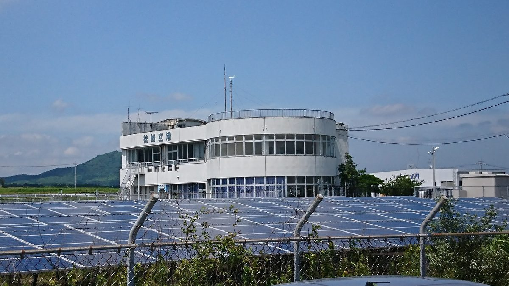

일본 경산성, 지상 태양광 FIT·FIP 지원 2027년도 종료 방침…공공용지·카포트 등 4가지만 계속

9월 30일 위원회서 제시…10개 후보 가운데 지역 신전력 공급·경작포기지 활용 사업 등은 행정 관여를 담보할 수 없다며 제외, 2027년 4월 새 제도 예정
일본 경제산업성이 2027년도에 지상 설치형 태양광발전소에 대한 FIT(고정가격 매입)·FIP(시장가격에 프리미엄을 얹어 주는 제도) 지원을 끝내는 방침을 내놓았다. 경산성은 9월 30일 재생에너지 주력전원화위원회에서 지붕 태양광과 함께 앞으로도 FIT·FIP로 지원할 태양광 사업으로 공공용지를 쓰는 사업, 지구온난화대책법상 촉진구역에서 '지역탈탄소화 촉진사업계획' 인정을 받은 사업, 태양광 패널을 얹은 카포트(주차장 지붕) 사업, 공항·도로·철도·항만 같은 인프라 공간의 사업 등 네 가지를 꼽았다. 경산성 자료에 따르면 토지를 개발하거나 용도를 바꾸지 않고 방재·경관·환경 영향이 작으며, 부적절한 사례가 생기면 행정이 개선을 요구할 수 있는 사업을 앞세웠다. 처음 검토한 10개 후보는 영농형 태양광을 포함한 5개로 좁혀졌고, 지역 신전력회사에 전기를 공급하는 사업, 지역 사업자 공급·기금 활용 사업, 공업단지·상업시설 부지, 골프장·스키장 터 같은 미이용지, 경작포기지를 활용하는 사업은 행정 관여가 담보되지 않는다는 이유 등으로 빠졌으며, 영농형 태양광은 제도를 고친 뒤 상황을 보며 지원 계속 여부를 따지기로 했다. 경산성은 2026년 10월부터 2027년 1월까지 인정 기준과 지원 가격·기간을 검토하고, 2027년 2~3월 재생에너지특별조치법 개정 의견 공모를 거쳐 4월 1일부터 새 제도를 운용할 계획이다.
시민에너지 관점
공공용지와 주차장 지붕, 공항·도로 같은 인프라 공간이 지원 대상으로 남았다는 것은, 새 땅을 깎지 않고 이미 쓰고 있는 공간 위에 태양광을 얹는 방식이 앞으로의 기준이 된다는 뜻으로 보인다. 난개발과 지역 갈등을 막으려면 행정이 관리할 수 있는 곳으로 좁혀야 한다는 판단은 이해할 수 있지만, 지역 신전력회사에 전기를 대는 사업이나 지역 기금을 쓰는 사업처럼 이익을 지역에 남기는 구조까지 함께 빠진 것은 아쉬운 대목이다. 지역의 수용성을 높이는 길은 행정의 감독만이 아니라, 주민이 발전소의 주인이 되어 전기와 수익을 지역 안에서 나누는 데에도 있기 때문이다. 국내에서도 공공부지·주차장 태양광을 늘릴 때 어디에 짓느냐와 함께 누가 소유하고 이익을 어떻게 지역에 돌리느냐를 제도 설계에 처음부터 넣어야 한다.
출처: PVeye 2026-10-24 中馬成美 원문 보기
経産省、地上設置型太陽光のFIT・FIP支援を2027年度に終了する方針…公共用地・カーポートなど4類型のみ継続
9月30日の委員会で提示…10の候補のうち地域新電力への供給や耕作放棄地を活用する事業などは行政の関与が担保されないとして除外、2027年4月に新制度の予定
経済産業省が、2027年度に地上設置型太陽光発電所へのFIT（固定価格買取制度）とFIP（フィード・イン・プレミアム制度）の支援を終える方針を示した。経産省は9月30日の再生可能エネルギー主力電源化委員会で、屋根上設置の太陽光とともに今後もFIT・FIPで支援する太陽光発電事業として、公共用地を活用する事業、温対法上の促進区域で「地域脱炭素化促進事業計画」の認定を受けた事業、太陽光パネル搭載カーポートを用いる事業、空港・道路・鉄道・港湾などインフラ空間で行う事業の4つを挙げた。経産省の資料によると、土地の開発や用途の転換がなく、防災・景観・環境への影響が小さく、不適切な事例に行政が改善を促せる事業を優先した。当初検討した10の候補は営農型太陽光を含む5つに絞られ、地域新電力会社に電力を供給する事業、地元事業者への供給・基金を活用する事業、工業団地や商業施設の敷地、ゴルフ場・スキー場跡地などの未利用地、耕作放棄地を活用する事業は、行政の関与が担保されないことなどを理由に外れた。営農型太陽光は制度を改めたうえで、状況を見ながら支援を続けるかどうかを検討する。経産省は2026年10月から2027年1月にかけて認定基準や支援価格・期間を検討し、2027年2～3月の再エネ特措法改正の意見公募を経て、4月1日から新制度を運用する予定だ。
市民エネルギーの視点
公共用地や駐車場の屋根、空港・道路などのインフラ空間が支援対象に残ったことは、新たに土地を切り開かず、すでに使われている空間に太陽光を載せるやり方が今後の基準になるという意味に見える。乱開発や地域の対立を防ぐには行政が管理できる場所に絞るべきだという判断は理解できるが、地域新電力に電気を供給する事業や地域の基金を使う事業のように、利益を地域に残す仕組みまで一緒に外れたのは惜しい点だ。地域の受け入れを高める道は行政の監督だけでなく、住民が発電所の持ち主となり、電気と収益を地域の中で分かち合うことにもあるからだ。韓国でも公共用地や駐車場の太陽光を広げる際には、どこに建てるかとともに、誰が所有し利益をどう地域に還元するかを、制度設計の最初から組み込むべきだ。
出典: PVeye 2026-10-24 中馬成美 原文を読む
日本经产省拟于2027年度终止对地面光伏的FIT和FIP支持…仅保留公共用地、光伏车棚等4类
9月30日委员会提出…10个候选类型中，向地区新电力供电、利用弃耕地等项目以无法确保行政参与为由被排除，新制度拟于2027年4月实施
日本经济产业省提出方针，拟在2027年度终止对地面安装型光伏电站的FIT（固定价格收购制度）和FIP（在市场价格上加付溢价的制度）支持。经产省在9月30日的可再生能源主力电源化委员会上，列出了与屋顶光伏一起今后继续以FIT和FIP支持的4类光伏项目：利用公共用地的项目、在《全球变暖对策推进法》规定的促进区域内获得“地区脱碳化促进事业计划”认定的项目、使用搭载光伏板的车棚（停车场顶棚）的项目，以及在机场、道路、铁路、港湾等基础设施空间实施的项目。根据经产省的资料，优先选择的是不进行土地开发、不改变土地用途、对防灾、景观和环境影响较小，并且出现不当案例时行政部门能够要求改正的项目。最初研究的10个候选类型被缩减为包括农光互补在内的5个；向地区新电力公司供电的项目、向当地企业供电或利用基金的项目、工业园区和商业设施用地、高尔夫球场和滑雪场旧址等未利用土地，以及利用弃耕地的项目，以无法确保行政参与等理由被排除在外。农光互补则将在修改制度后视情况研究是否继续支持。经产省计划在2026年10月至2027年1月研究认定标准和支持价格、期限，2027年2月至3月就修改《可再生能源特别措施法》公开征求意见，并从4月1日起实施新制度。
市民能源视角
公共用地、停车场顶棚以及机场、道路等基础设施空间仍留在支持范围内，这似乎意味着，不开辟新土地、在已在使用的空间上加装光伏，将成为今后的标准。为防止乱开发和地区冲突而把范围缩小到行政能够管理的地方，这一判断可以理解；但向地区新电力供电、利用地区基金这类把利益留在当地的项目也一并被排除，令人遗憾。提高地区接受度的途径不只在于行政监督，也在于让居民成为电站的主人，在地区内部分享电力和收益。韩国在扩大公共用地和停车场光伏时，也应从制度设计之初，就把建在哪里与由谁拥有、如何把利益返还地区一并纳入。
来源: PVeye 2026-10-24 中马成美 查看原文
Japan's METI plans to end FIT and FIP support for ground-mounted solar in fiscal 2027, keeping only four categories including public land and solar carports
Plan presented to a committee on September 30; of 10 candidate categories, projects supplying regional power retailers or using abandoned farmland were dropped because government involvement could not be assured; new system expected in April 2027
Japan's Ministry of Economy, Trade and Industry (METI) has set out a plan to end feed-in tariff (FIT) and feed-in premium (FIP) support for ground-mounted solar power plants in fiscal 2027. At a meeting of its committee on making renewable energy a main power source on September 30, METI named four types of solar projects that, along with rooftop solar, would continue to receive FIT or FIP support: projects on public land, projects in promotion zones under the Act on Promotion of Global Warming Countermeasures that have been certified under a regional decarbonization promotion project plan, carports topped with solar panels, and projects in infrastructure spaces such as airports, roads, railways and ports. According to METI documents, priority went to projects that involve no land development or change of land use, have little impact on disaster prevention, landscape or the environment, and allow the authorities to demand improvements if problems arise. The 10 categories initially considered were narrowed to five, including agrivoltaics, while projects supplying power to regional power retailers, projects supplying local businesses or using funds, sites within industrial parks or commercial facilities, unused land such as former golf courses and ski areas, and projects on abandoned farmland were dropped, partly because government involvement could not be assured; for agrivoltaics, METI will revise the rules and then decide, depending on the situation, whether to keep supporting it. METI plans to examine certification standards and support prices and periods from October 2026 to January 2027, hold a public comment period on amendments to the Renewable Energy Special Measures Act in February and March 2027, and run the new system from April 1.
Citizen Energy View
That public land, parking-lot roofs and infrastructure spaces such as airports and roads remain eligible suggests that placing solar on spaces already in use, rather than clearing new land, will become the standard. The judgment that support should be narrowed to places the authorities can manage, in order to prevent reckless development and local conflict, is understandable, but it is regrettable that structures which keep benefits in the region, such as projects supplying regional power retailers or using local funds, were dropped along with them. Local acceptance can be won not only through government oversight but also by letting residents own power plants and share the electricity and revenue within their communities. As Korea expands solar on public land and parking lots, it should build into its rules from the start not only where plants go but who owns them and how the benefits return to the community.
Source: PVeye 2026-10-24 中馬成美 Read the original